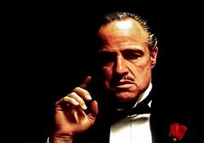

The Godfather
The Godfather is a 1972 American epic crime film[2] directed by Francis Ford Coppola, who co-wrote the screenplay with Mario Puzo, based on Puzo's best-selling 1969 novel of the same title. The ensemble cast includes Marlon Brando, Al Pacino, James Caan, Richard Castellano, Robert Duvall, Sterling Hayden, John Marley, Richard Conte, and Diane Keaton. It is the first installment in The Godfather trilogy, chronicling the Corleone family under patriarch Vito Corleone (Brando) from 1945 to 1955. It focuses on the transformation of his youngest son, Michael Corleone (Pacino), from reluctant family outsider to ruthless mafia boss. Paramount Pictures obtained the rights to the novel for $80,000, before it gained popularity.[3][4] Studio executives had trouble finding a director; the first few candidates turned down the position before Coppola signed on to direct the film but disagreement followed over casting several characters, in particular, Vito (Marlon Brando) and Michael (Al Pacino). Filming took place primarily on location around New York City and in Sicily, and was completed ahead of schedule. The musical score was composed principally by Nino Rota, with additional pieces by Carmine Coppola. The Godfather premiered at the Loew's State Theatre on March 14, 1972, and was widely released in the United States on March 24, 1972. It was the highest-grossing film of 1972, and was for a time the highest-grossing film ever made, earning between $250 and $291 million at the box office. The film was acclaimed by critics and audiences, who praised its performances—particularly those of Brando and Pacino—direction, screenplay, writing, story, cinematography, editing, score, and portrayal of the mafia. The Godfather launched the successful careers of Coppola, Pacino, and other relative newcomers in the cast and crew. At the 45th Academy Awards, the film won Best Picture, Best Actor (Brando), and Best Adapted Screenplay (for Puzo and Coppola). In addition, the seven other Oscar nominations included Pacino, Caan, and Duvall all for Best Supporting Actor, and Coppola for Best Director. The Godfather is regarded as one of the greatest and most influential films ever made, as well as a landmark of the gangster genre.[5] It was selected for preservation in the U.S. National Film Registry of the Library of Congress in 1990, being deemed "culturally, historically, or aesthetically significant" and is ranked the second-greatest film in American cinema (behind Citizen Kane) by the American Film Institute. It was followed by sequels The Godfather Part II (1974) and The Godfather Part III (1990). Pauline Kael wrote that "If ever there was a great example of how the best popular movies come out of a merger of commerce and art, The Godfather is it."[6]